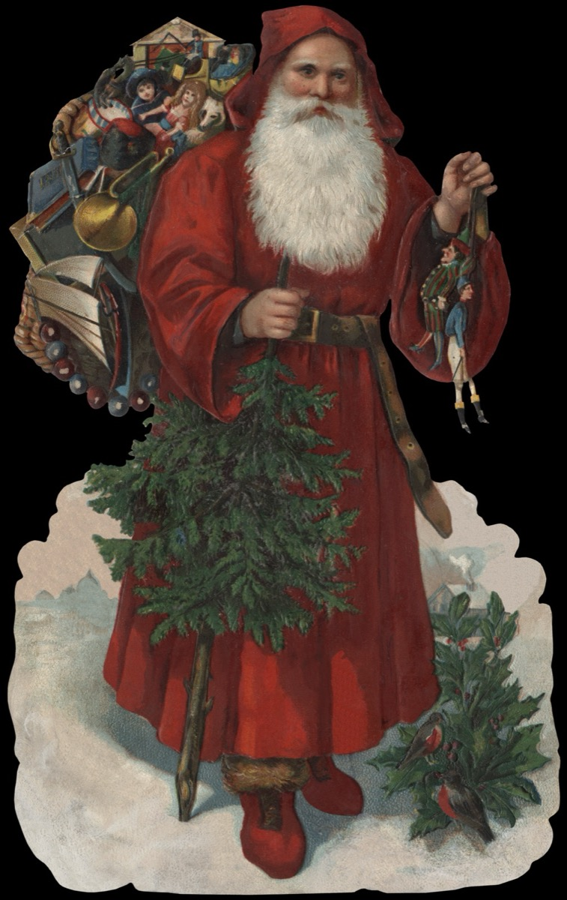

Moș Nicolae
De când sunt eu pe pământ
Vreau să știi Moș Nicolae
Niciodată n am primit.
Daruri de la dumitale
Vara am umblat desculț
Iarna n-am avut bocanci
Te rog Moșule, m-asculți?
Unde să-mi pui un cadou sau câțiva franci?
Aștept pitit după ușă
Cu gândul că vei veni
Dar surpriza e surpriză,
Iată Moșul că sosi
Te-am văzut pe-adevărate
Moș Nicolae, bun venit
Am avut de tine parte
Și de cadoul primit!
Mulțumesc Moș Nicolae că într-adevar exiști
Pentru toți copii lumii
Mai aleși pentru cei triști
Și că lași pe unde treci numai bucurii!
Vasile Groza